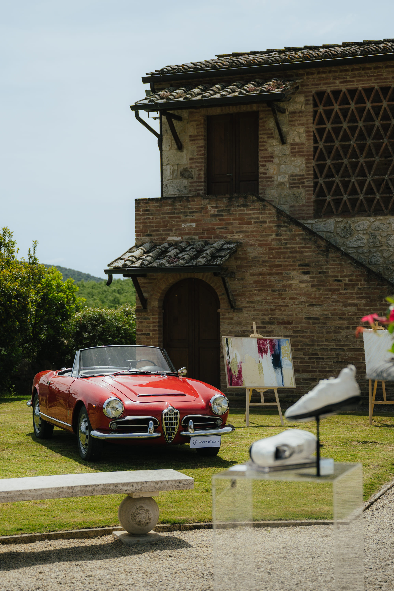
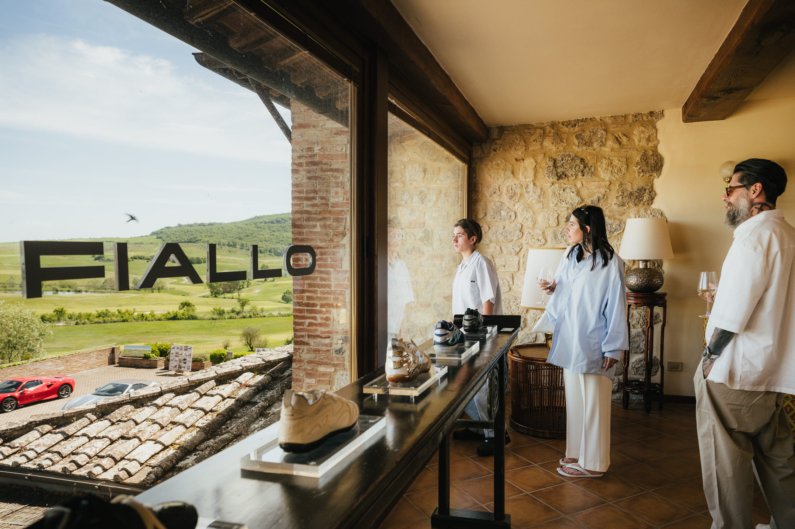

Un viaggio alla scoperta del Made in Italy
Il Giardino dell'Eden nasce per valorizzare il Made in Italy nella sua forma più bella: territorio, artigianato, design automobilistico e arte convivono in un'unica giornata di vera eleganza italiana. L'evento si tiene al Castello della Paneretta, nel cuore del Chianti, tra Siena e Firenze.
L'ingresso è gratuito e aperto al pubblico, al fine di promuovere le imprese e le eccellenze artigiane presenti. Ingresso gratuito.


Un contesto prestigioso per il tuo brand
Partecipa al prossimo Giardino dell'Eden e presenta la tua realtà in un contesto esclusivo. Collaborare a questo evento significa:
- Associare il marchio a un evento che valorizza il territorio e le eccellenze italiane.
- Raccontarsi in modo autentico: non è una fiera, ma un'esperienza che resta impressa.
- Incontrare i clienti giusti: imprenditori, collezionisti e appassionati di lifestyle.
- Far provare i propri prodotti con degustazioni, test drive ed esposizioni dal vivo.
- Creare relazioni in un contesto elegante ma informale.
- Aumentare la visibilità unendo l'esperienza vissuta sul posto al racconto digitale.